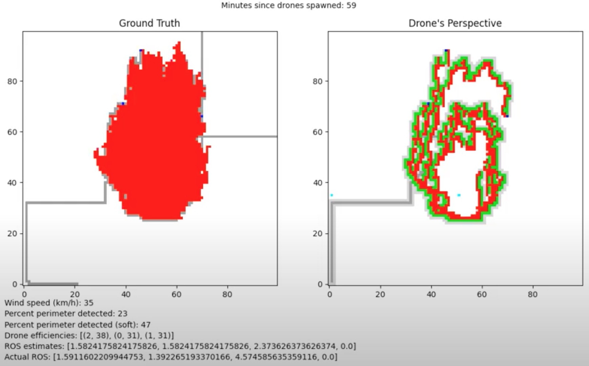
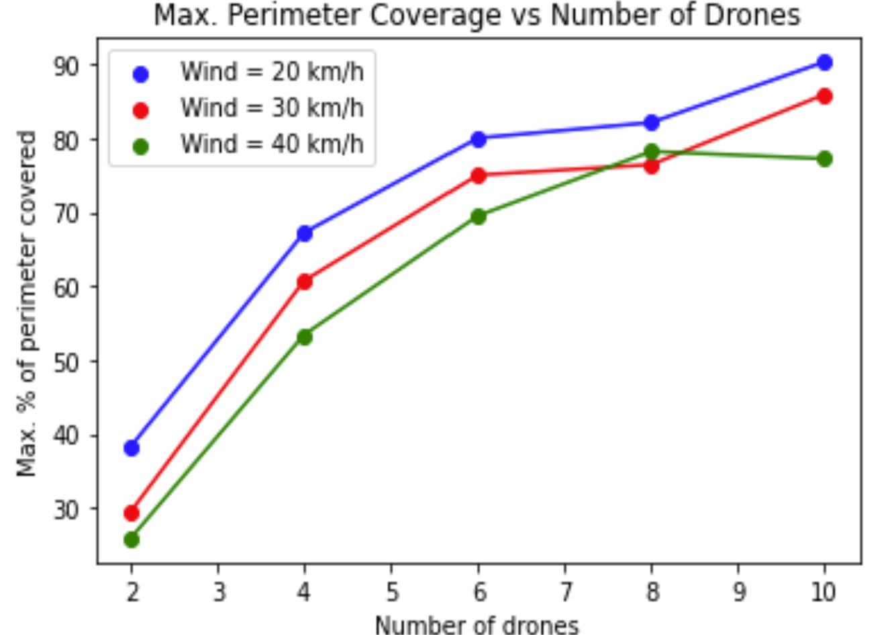
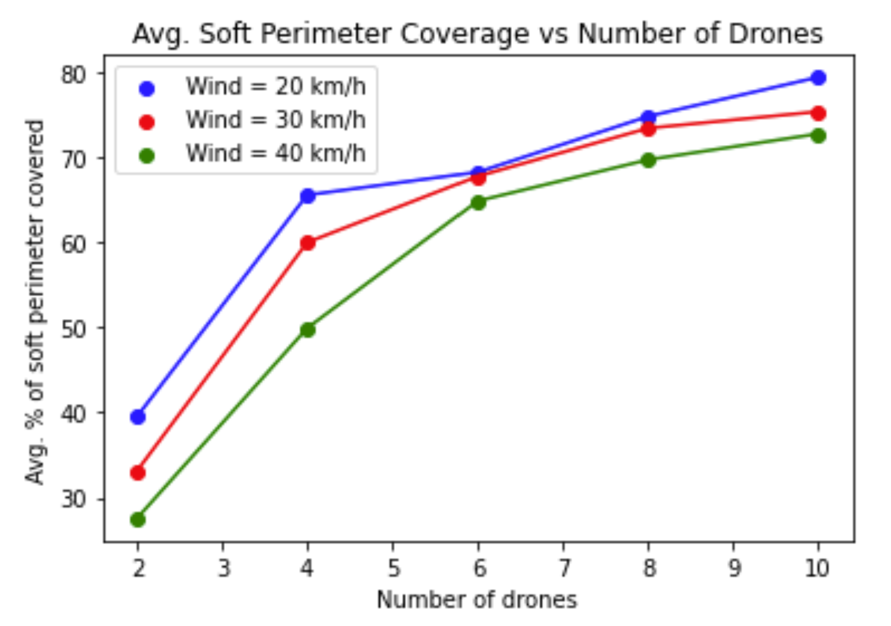
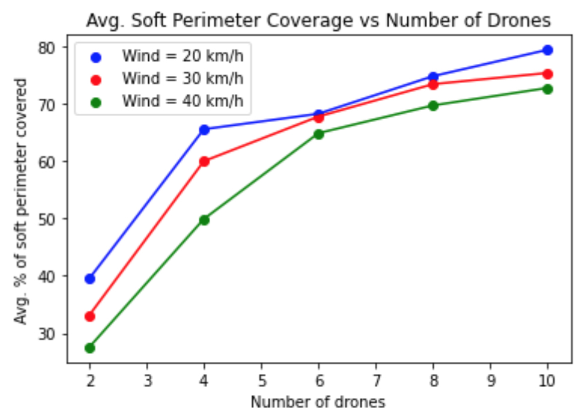

Mapping Fires using a Drone Swarm

Mapping Fires using a Drone Swarm is a 2-person group project for the course CSCI 513 – Autonomous Cyber Physical Systems at USC.
TL;DR
Autonomous UAVs can fly over varied terrain without human interaction. We explore using a swarm of UAVs for firefighting support. While too small to extinguish fires, a swarm can efficiently search for a fire and map its extent in real time, giving firefighters crucial ground intelligence. We use a 2D grid-world to demonstrate how a swarm of drones can find and map a spreading fire.
The Inspiration
Firefighting is incredibly dangerous and time sensitive. Fires spread quickly, and a real-time layout of the fire enables quicker response and more strategic use of resources. Aerial vehicles are best suited for mapping fires since they need not navigate ground terrain and can observe larger areas. By making the system autonomous, we eliminate the need for skilled human operators and leverage instant drone-to-drone communication for sophisticated mapping algorithms.
Demo
A quick recording of our simulation.
Perimeter coverage is highly dependent on the number of drones. With fewer drones, perimeter updates are slower and the gap between new and old boundaries grows larger.
Design and Implementation
Environment
The simulation is a 2D grid-world representing land viewed from above. Each cell is labelled whether it is on fire and whether a drone is above it. Fire spread is modelled as an ellipse whose eccentricity is determined by wind speed, assuming flat terrain and north-bound wind. Drones are equipped with simulated infrared cameras that can perceive 9 grid boxes — their current cell and all adjacent cells.
Simulation
Each simulation starts with some contiguous grid squares already on fire. Drones spawn at random edges of the bounding box and search for the fire. Once detected, the system enters a mapping stage: remaining drones move to the detection point and navigate the fire perimeter, continuously updating their mapping as the fire spreads.
Fire Model
Fire shape and rate of spread depends on temperature, fuel, wind, and terrain slope. We model fire spread as an ellipse whose eccentricity scales with wind speed. The stronger the wind, the more elongated the spread.
Algorithm
The swarm uses a centralised architecture: each drone communicates to a central controller, which provides high-level coordination instructions. Individual drones apply their own local logic for problems specific to themselves.
Metrics
Percent Perimeter Detected — the share of the fire's actual perimeter detected by drones. Percent Perimeter Detected (soft) adds flexibility, also counting adjacent detections. Drone Efficiencies maps each drone's ID to the percentage of total fires it discovered. ROS Estimate gives the drone-estimated rate of spread at the right, left, head, and rear flanks, compared against the ground-truth Actual ROS.
Results
We found that increasing the number of drones reduces the average standard deviation in drone efficiencies — contrary to our expectation that more drones would cause increased clustering and wasted effort. This suggests our path-planning algorithm may need tuning at lower drone counts.



Resources
The code is available at this Colab notebook.